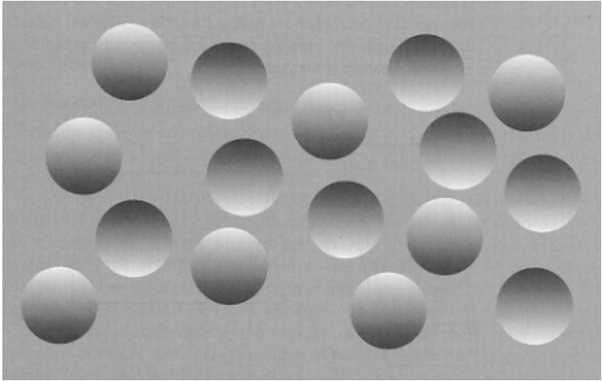

Our perception includes specific assumptions about how things should be. If they are not met, there will be an error. In particular, there is a natural assumption that world is in 3D (not flat), and, that there is one source of light, and it shines from above. What do You see in this picture? It seems that there are some concave and convex circles on the surface. First of all, we know, that this picture is on a flat computer screen, so everything here is flat. And then – turn your screen upside down! What have happened to the picture?
Project was made by Team Latvia